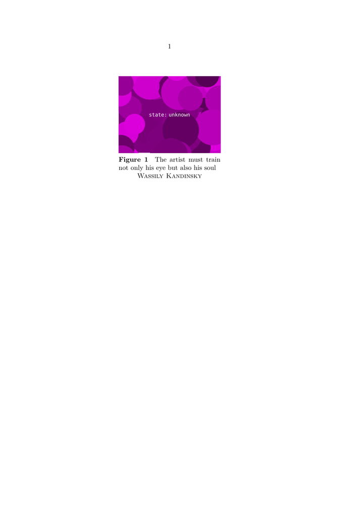

Contents
Summary
The command \floatuserdataparameter is used to fetch user data from floating objects, in a similar fashion as \structureuservariable is used to fetch it from structure elements, such as chapters, sections, etc.
Settings
Description
The command \floatuserdataparameter expands to the value of a named user data key belonging to the float that is currently being placed. Float environments such as \startplacefigure take two optional assignment lists: the first sets the usual float and caption settings (for example title, reference, or location), while the second holds free-form key=value pairs that are not part of the built-in float interface.
Inside the float body \floatuserdataparameter{key} retrieves the matching value. It plays the same role for floats that \structureuservariable plays for structure elements such as chapters and sections. Because the keys are not predefined, the command is mainly useful in styles and setups that agree on a private key name with the document markup.
Examples
Example 1
-
\setuppapersize[A5] \useMPlibrary [dum] %% sample images % Provided by Wolfgang in the mailing list \setupcaption [figure] [textcommand=\FigureTextcommand] \define[1]\FigureTextcommand {#1% figure caption \doifsomething{\floatuserdataparameter{name}}% has 'name' content? {\crlf \centerline{\sc\floatuserdataparameter{name}}}} \starttext \startplacefigure[title={The artist must train not only his eye but also his soul}][name={Wassily Kandinsky}] \externalfigure[dummy][width=.4tw] \stopplacefigure \stoptext
-
